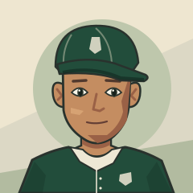

Class of Nine
Class of NineVARSITY CLUB · ART DIRECTION STUDY 02
A player you recognize.
Original cel illustration. Adult athletes. A sports profile built around the person.
Fictional examples · art proposal · no game data changes
CVCEDAR VALLEY
MEDIA DAY / 2027CEL PORTRAIT STUDY
Season performance
RECORDED · SAMPLEPlayer evaluation
SEPARATE FROM RESULTSOverall ratingExisting game scale · no invented 99-point conversion
Identity at every size
SAME FACE / SAME PERSONThe full profile gives the athlete space. Roster rows keep a tight face crop and aligned numbers. Scouting uncertainty and commitment status belong in explicit labels, never a glowing rarity frame.
WHAT CHANGED
Back to the original drawing intent.
Asymmetric expressions, different facial silhouettes, visible hair, adult neck and shoulder proportions, and deliberate two-tone shadows. Team identity stays in the uniform and typography.
Art brief, limitations and production requirements ↗